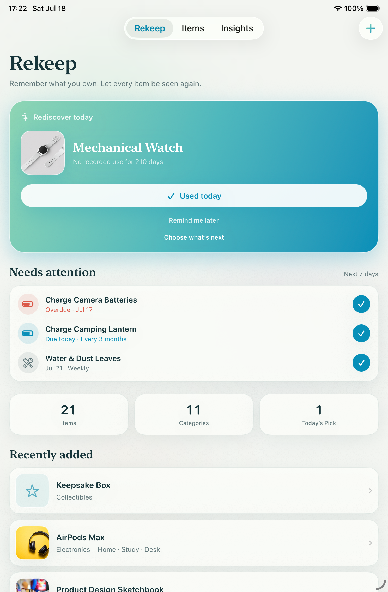
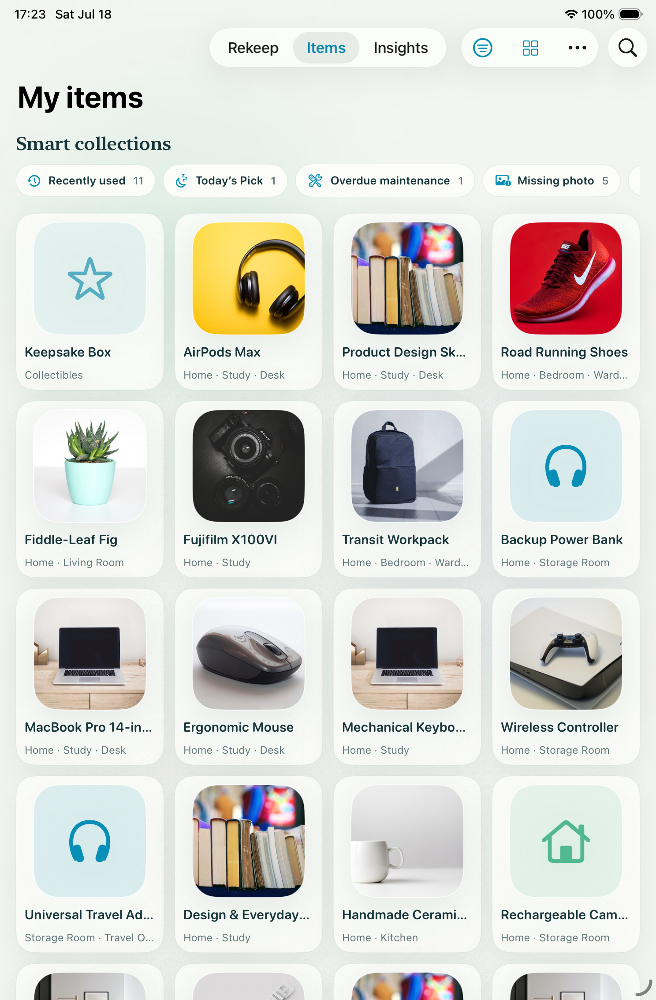
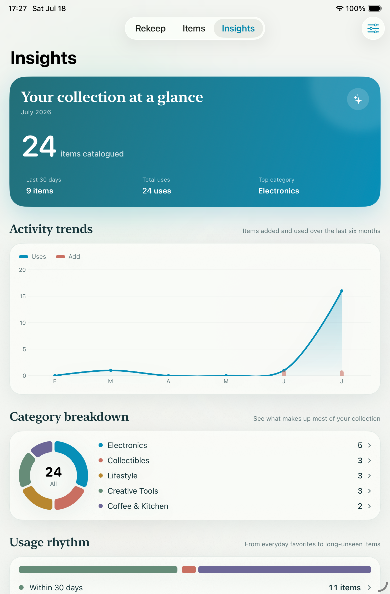
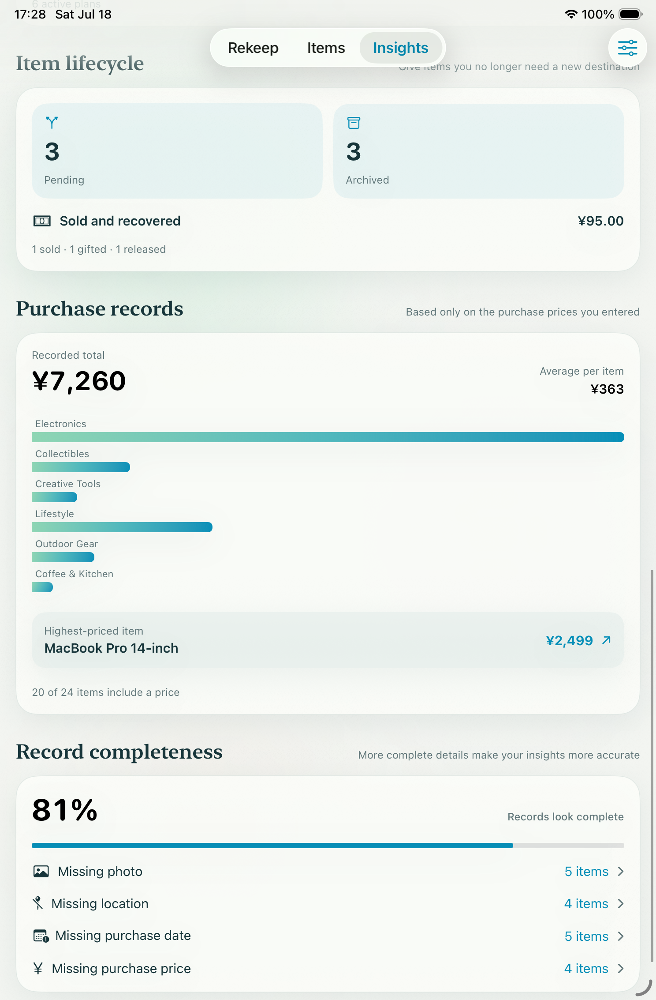
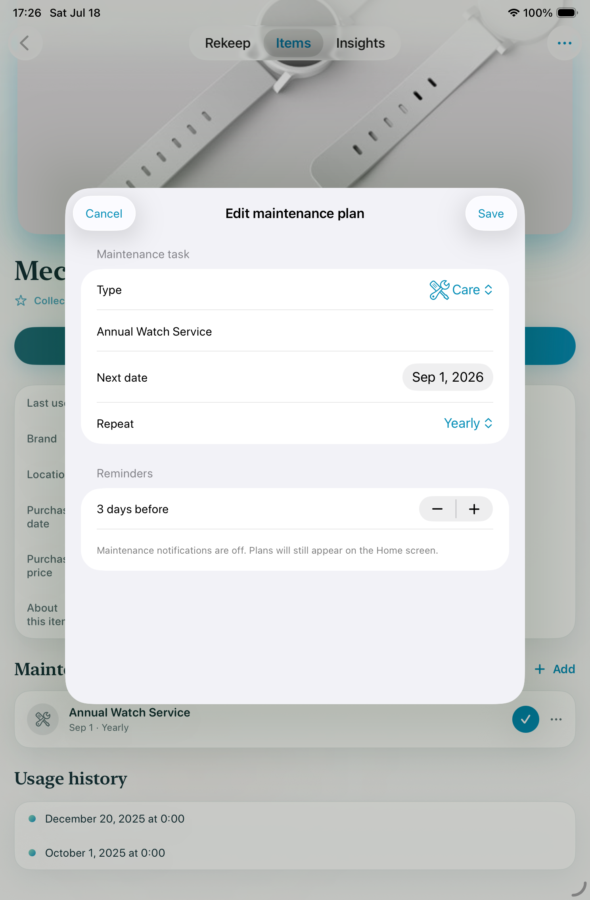
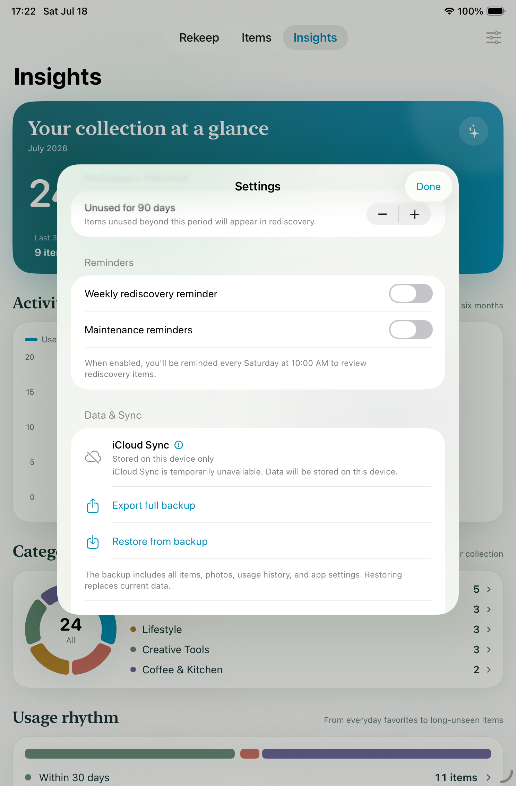

Your belongings, remembered
Record what you own.
Let every item be seen again.

Everything you own, in view.
Build a visual catalog that stays useful, searchable, and easy to understand.

A collection that feels personal.
Organize items by category, brand, and location. Switch between focused views and find what matters without digging through lists.
- Visual catalog
- See the objects, not just their names.
- Smart collections
- Surface recent, incomplete, and overlooked items.
- Flexible details
- Use your own categories, brands, and locations.
Patterns worth noticing.
Understand what you add, use, maintain, and leave unseen.


Care continues after cataloging.
Schedule maintenance, keep reminders practical, and protect the things you choose to keep.
Maintenance plans
Local reminders
Private iCloud sync


Your catalog stays yours.
Smart photo analysis runs on your device. Rekeep contains no advertising SDKs, cross-app tracking, or behavioral profiling.